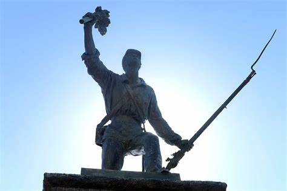
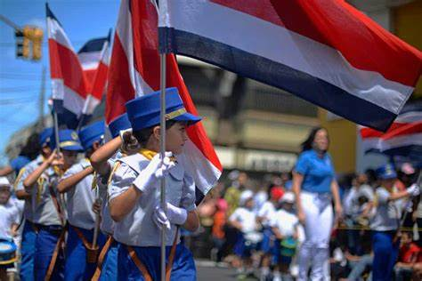
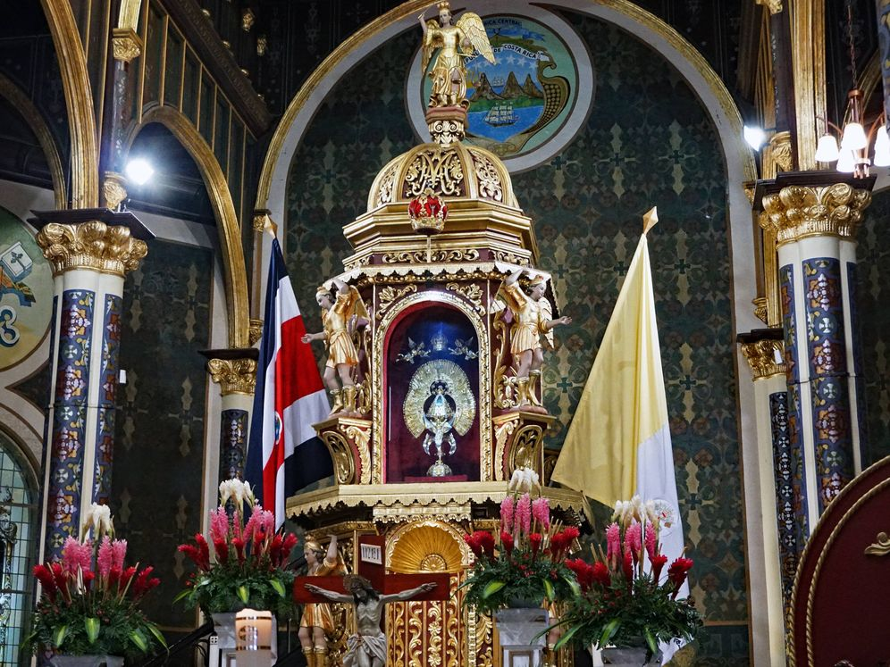

O espanhol é a língua oficial da Costa Rica; porém, por ser um país turístico e bem próximo aos Estados Unidos da América muitos costa-riquenhos dominam o inglês. Portanto, certamente, não haverá problemas de comunicação. A religião predominante é o catolicismo, mas há espaço para outras. Por último, a Costa Rica é um país democrático, pacífico e sem exército militar desde 1948.
A Costa Rica deve o seu nome à relativa prosperidade adquirida graças à cultura do café e a banana. O café principalmente é cultivado sobre as bandejas do centro do país. Em 2006, a Costa Rica produziu 131 949 toneladas de café, que com efeito duodécimo o produtor mundial. A banana é cultivada sobre as costas vastas em plantações.
A Costa Rica é um país localizado na América Central, que possui o espanhol como língua oficial e a cidade de San José como capital. Como exemplos de festas importantes, podemos citar o festival de la Hispanidad, o Día de la Virgen de los Ángeles e o Día de Juan Santamaría. O festival de la Hispanidad é comemorado no dia 12 de outubro e celebra a descoberta das Américas por Cristóvão Colombo. Já o Día de la Virgen de los Ángeles é comemorado em 2 de agosto, celebrando a virgem que leva o mesmo nome, após sua imagem ter sido encontrada em uma pedra escura por uma indígena. O Día de Juan Santamaría, herói nacional que foi crucial para a vitória da Costa Rica na Batalha de Rivas, ao queimar o Mesón de Guerra.
|  | Santamaría nasceu na cidade de Alajuela. Quando o flibusteiro norte-americano William Walker derrubou o governo da Nicarágua e tentou conquistar as outras nações da América Central, incluindo a Costa Rica, a fim de formar um império privado escravocrata, o presidente costarriquenho Juan Rafael Mora Porras convocou a população a pegar em armas e marchar ao norte da Nicarágua para lutar contra o invasor estrangeiro. Santamaría, um trabalhador pobre e filho ilegítimo de mãe solteira, se juntou ao exército como um baterista menino. Os soldados o apelidaram de "el erizo" ("o porco-espinho") por conta de seu cabelo espetado. Após o ataque a um pequeno contingente de soldados de Walker em Santa Rosa, na província de Guanacaste, as tropas costarriquenhas continuaram marchando ao norte, até chegarem à cidade de Rivas, em 8 de abril de 1856. O combate travado aí foi feroz, e os costarriquenhos não foram capazes de remover os homens de Walker de um albergue perto do centro da cidade, a partir do qual ele tinha uma vantajosa posição de tiro. Segundo a narrativa tradicional, em 11 de abril, o general salvadorenho José María Cañas sugeriu que um dos soldados avançasse em direção à pousada com uma tocha e ateassem fogo. Alguns soldados tentaram e falharam, mas finalmente Santamaría se ofereceu na condição de que, no caso de sua morte, alguém iria cuidar de sua mãe. Ele então avançou e foi mortalmente ferido por fogo inimigo. Antes de expirar ele conseguiu, no entanto, atear fogo ao albergue, contribuindo decisivamente para a vitória da Costa Rica em Rivas. Esta versão é, aparentemente, apoiada por um pedido de uma pensão estatal, apresentado em novembro 1857 pela mãe de Santamaría, bem como pelos documentos do governo mostrando que a pensão foi concedida. Vários historiadores, no entanto, têm questionado se a versão está correta e se Santamaria morreu ou não durante essa batalha ou outra. De qualquer forma, no final do século XIX, intelectuais e políticos da Costa Rica se aproveitaram da guerra contra Walker e da figura de Juan Santamaría com finalidades nacionalistas. |
| Este feriado na Costa Rica é sempre comemorado em 11 de abril. O feriado comemora a Batalha de Rivas, que ficou famosa pelas ações heróicas do Herói Nacional, Juan Santamaria, o "Pequeno Baterista". |
 |
| No Período Colonial, Cartago foi a principal cidade dos espanhóis na Costa Rica , e sua capital. Ao seu redor havia várias cidades para índios nativos. As leis espanholas da época proibiam a passagem de mulatos e pardos (negros livres) de Cruz de Caravaca, vivendo dispersos a leste da cidade. Em 2 de agosto de 1635 , uma humilde jovem que morava no lugar chamado Puebla de los Pardos, coletavam como de costume lenha no meio da mata. Em uma rocha, perto de uma nascente, ele descobriu uma pequena escultura em pedra de uma mulher com um bebê nos braços. Feliz, resolveu levá-lo para casa, onde o guardava numa gaveta. No dia seguinte, ele voltou ao mesmo local onde foi encontrado, e encontrou uma escultura idêntica à encontrada no dia anterior, fez o mesmo, levou-a para casa para guardá-la junto com a outra, mas quando olhou para isso, ele percebeu que não estava lá e salvou a nova imagem encontrada. Aconteceu da mesma forma no terceiro dia, mas desta vez, assustada, a menina levou-a ao pároco local, que, não dando muita importância à história da jovem, guardou a imagem num baú, esquecendo-se dela. No dia seguinte, o clérigo abriu a caixa e, para sua surpresa, ela havia sumido do tabernáculo _ No dia seguinte o pároco abriu o sacrário e não o encontrou, pelo que, acompanhado de um grupo de paroquianos, dirigiu-se ao bosque, onde se surpreendeu ao encontrar a imagem em cima da pedra. Foi assim que o padre percebeu que aquele era um recado da Virgem Maria: ela queria estar perto dos pardos, dos pobres, dos humildes e dos desprezados. E foi assim, que construíram um pequeno templo em sua homenagem ali mesmo, onde atualmente se encontra a Basílica dedicada a Nossa Senhora Rainha dos Anjos. A pequena imagem foi batizada com o nome de Virgen Morena e mais tarde foi chamada Nuestra Señora de los Ángeles , porque no dia 2 de agosto os franciscanos celebram a festa da Virgen de los Ángeles . Por esta razão, é certo que a descoberta ocorreu nesse dia, mas não no ano exato, estima-se que tenha sido antes de 1639, embora alguns acreditem que tenha sido em 1635. |
|  | A mulher que encontrou a referida imagem é popularmente conhecida como Juana Pereira , diz-se que era uma jovem camponesa mulata do lugar; mas seu rastro se perdeu na História da Costa Rica . Sabe-se que existiu porque os escritos da época e da Igreja o comprovam, porém, não teve seguimento após a descoberta da imagem da Virgem. O segundo arcebispo de San José, Víctor Sanabria Martínez, tentou recuperar dados sobre ela. Em suas investigações, detectou que a maioria das mulheres naquela área se chamava Juana e tinha o sobrenome Pereira. Não encontrando a identidade desta menina, chamou-a de "Juana Pereira" em homenagem a todas as camponesas da época daquela jovem que encontrou a imagem da "Senhora" de Los Angeles. Nelas, pretendia-se estender essa homenagem a toda a cultura indígena e afro -descendente da Costa Rica . |